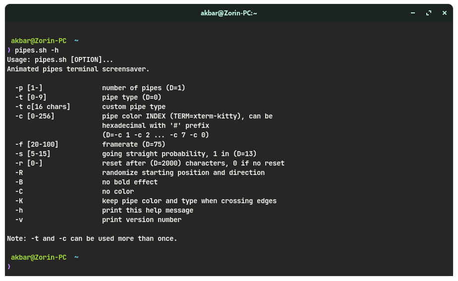
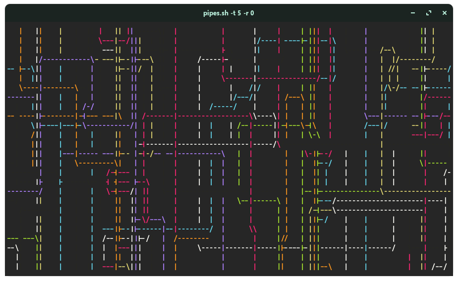
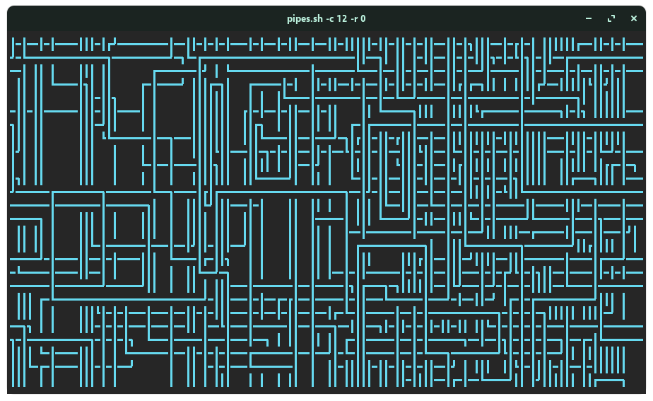
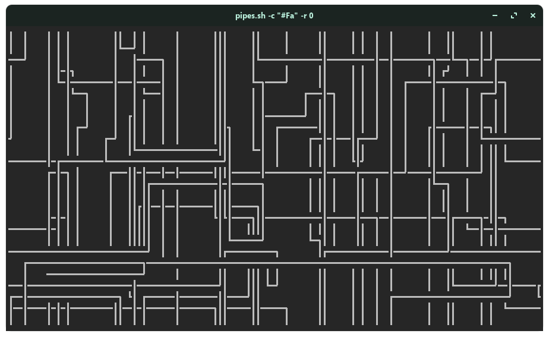

About Me

Nama saya Mifthahul Rezki Akbar. Lebih biasa dipanggil Akbar. Saya adalah siswa dari SMK Negeri 1 Bukittinggi. Saya memiliki hobi mengotak-atik laptop saya sendiri. Saya tertarik dengan hal-hal yang berkaitan dengan Linux.
Nama saya Mifthahul Rezki Akbar. Lebih biasa dipanggil Akbar. Saya adalah siswa dari SMK Negeri 1 Bukittinggi. Saya memiliki hobi mengotak-atik laptop saya sendiri. Saya tertarik dengan hal-hal yang berkaitan dengan Linux.

Pada artikel ini, kita akan membahas tentang sebuah program bernama
pipes.sh. Memang nama ini terdengar aneh, tetapi ini menggunakan
bahasa C dan Bash sebagai pembuatan programnya.
pipes.sh merupakan program sebagai screensaver pada terminal Linux.
Program ini memiliki ukuran yang kecil. pipes.sh menggunakan bahasa
pemrograman C dan Bash.
-> Ringan
-> Kode progamnya bisa dimodifikasi
-> Bisa digunakan di semua terminal Linux
-> Bisa dikustomisasi dengan banyak pilihan
Untuk paket pipes.sh sudah tersedia di beberapa distribusi Linux.
Jika distribusi Linux yang kita pakai tidak menyediakan paket
pipes.sh, kita bisa membangun paket pipes.sh dari Github.
-> Arch Linux
Untuk distro berbasis Arch Linux, pertama-tama kita
harus memasang
AUR Helper, yaitu
yay.
# Install git package.
$ sudo pacman -S git
$ git clone https://aur.archlinux.org/yay-git.git
# Installing yay from the source code.
$ makepkg -si
# Using yay to install pipes.sh.
$ yay -S pipes.sh
-> Distro Lainnya code GitHub
# Clone the pipes.sh repository.
$ git clone https://github.com/pipeseroni/pipes.sh.git
$ sudo make install
pipes.sh memiliki flags yang bisa digunakan agar program ini
bisa dimodifikasi sesuka hati. Untuk melihat flags yang tersedia,
kita bisa mengetik perintah man pipes.sh.
pipes.sh bisa dikustomisasi sesuai dengan keinginan kita. program
ini.

Berikut contoh gambar penggunaan pipes.sh sebagai screensaver jenis
pipa, menggunakan opsi -t [0-9].

Kita juga bisa mengubah warna pipa menjadi hanya 1 warna saja. Kita
perlu menggunakan opsi -c [0-256] atau
-c [#0 - #FF].


Dan masih banyak lagi opsi flags yang bisa kita gunakan untuk
kustomisasi program pipes.sh ini.
pipes.sh merupakan program yang unik sebagai screensaver untuk
terminal. Ini merupakan program yang bisa dikonfigurasi sesuai
dengan selera kita. Di GitHub, program ini sudah memiliki stars
lebih dari 1.200! terjadi kemungkinan error pada program ini jika
kita menggunakan shell lain, seperti zsh dan fish.